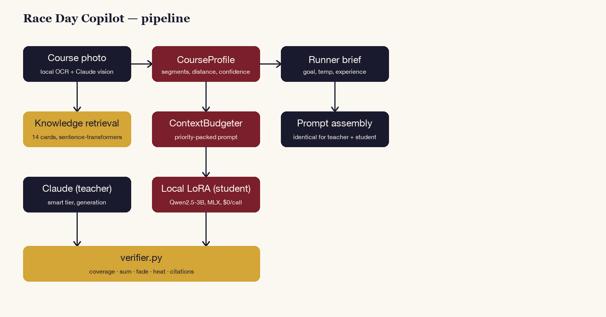
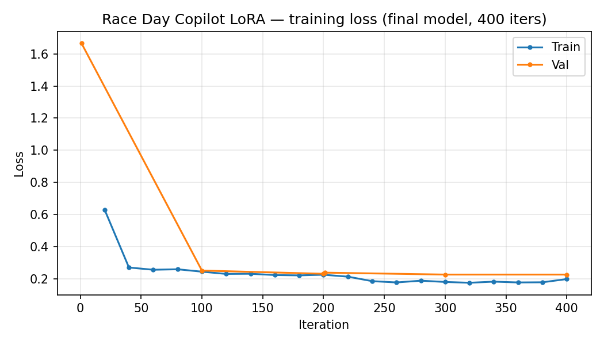
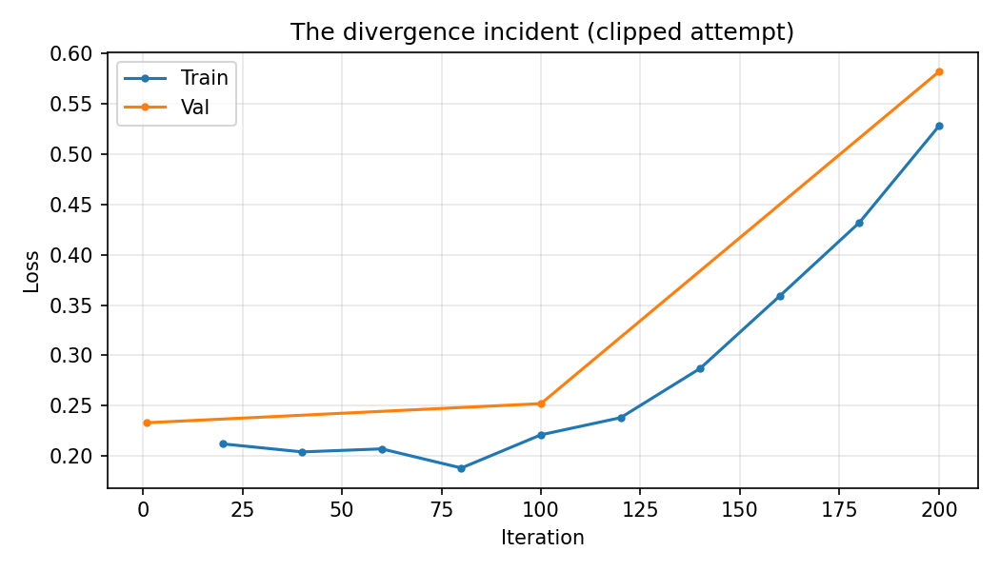

Coverage
Every kilometre of the race is accounted for, with none missing and none invented.
Ask a chatbot for a pacing plan and it hands you splits that don't add up.
Photograph a race course map and get a km-by-km pacing plan that accounts for hills, heat and realistic fade. Every plan is checked in plain code against five deterministic rules — coverage, arithmetic sum against the stated goal, per-km plausibility against the course profile, fade direction, and a heat adjustment derived from a real Boston finding — before it is ever shown. Alongside it runs a model distilled onto this laptop, and the honest account of what it took to get there.
every plan must pass in deterministic code before it reaches the screen. No plan is displayed unchecked.
parse success from the fine-tuned model, up from 55.7% for the base. Structure was learned convincingly.
LoRA training attempts, including two divergence incidents and a silent zero-loss bug. All four are documented.
of the fine-tune's plans still miss the 90-second sum tolerance. The gap is arithmetic, and it is named.
↓ the guardrail
A plausible-looking table of splits is the easiest thing in the world for a language model to produce and one of the hardest for a runner to check at a glance. Ask for a 3:30 marathon plan and you will cheerfully receive splits that sum to 3:24, ignore a 200-metre climb, or assume a negative split that 97.5% of runners never achieve.
So verifier.py checks every plan against five rules in ordinary
Python before display:
Every kilometre of the race is accounted for, with none missing and none invented.
The splits actually sum to the stated goal time, within a 90-second tolerance.
Each split is sane against that segment's real gradient. A climb cannot be paced like a descent.
The plan fades the way real fields fade, in the right direction and by a believable magnitude.
A formula derived from a real measured effect: about a minute per °F on the field median.
Vision runs locally — OCR plus claude -p — and rejects
photos that are not course maps rather than hallucinating a profile.

↓ a fair fight
Fourteen knowledge cards on pacing research — negative-split rarity, hill
effort strategy, the heat tax, wall decay — plus four findings digests, all
embedded locally and packed into the prompt by a priority-based
ContextBudgeter.
The detail that makes the benchmark trustworthy: the exact same prompt-assembly code serves the Claude teacher and the local student. Neither ever receives a hint the other did not. It is easy to accidentally benchmark two different prompts and report it as a model comparison.
↓ the result, without the spin
| System | Parse success | Verifier pass rate | Latency |
|---|---|---|---|
| Base Qwen2.5-3B (no fine-tune) | 55.7% | 0.0% | 17.5s |
| + LoRA (this project) | 95.7% | 0.0% | 53.7s |
| Claude (teacher, zero-shot) | 90.0% | 75.7% | 157.7s |
A 0.0% verifier pass rate looks like total failure and is not, but the distinction only survives if you read the per-check breakdown. The fine-tune reaches near-parity with the teacher on structure, coverage, hill plausibility and the heat formula, all under 5% failure.
What it cannot do is exact split arithmetic.
82.9% of its plans miss the 90-second sum tolerance, and
91.4% show a self-consistency mismatch between the model's
own fade_allowance_pct field and what its own splits compute.
Since the verifier is strict and every rule must pass, one persistent failure
mode zeroes the whole column.
That is a genuine and well-understood limitation of language models doing precise multi-step arithmetic, not a bug in the training. A blind judge preferred the teacher in 93.3% of 60 pairwise comparisons, with the LoRA at 0% and 6.7% ties — reported as it came out.
↓ the part usually left out
Most fine-tuning writeups present a loss curve that descends politely. This one took four attempts, and the failures were more instructive than the success:
Training examples were being truncated well before the part that mattered, so the model never saw the ends of its own targets.
The worst failure mode available: training that reports success while learning nothing at all.
Loss departing upward and not returning. The curve for one of them is committed to the repository rather than deleted.
Written to get a stable run out of the fourth attempt after the stock configuration would not converge.
The shipped adapter comes from roughly 400 clean iterations. Stopping there rather than chasing a fifth attempt was a deliberate call: the remaining gap is arithmetic, and more of the same training was not going to close it.


A repository that only contains the run that worked is not showing you how the model was built. It is showing you the last thing that happened.
Why the divergence curve is in the repoFinish · what it is built on
sentence-transformersContextBudgeter, shared identically by teacher and studentclaude -p; no Gemini or OpenAI vision keyeval/